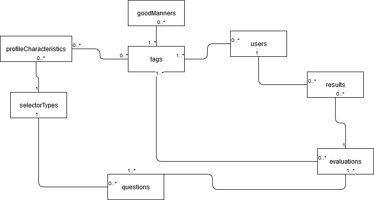

Sa se implementeze o aplicatie Web responsiva ce ofera suport pentru invatarea si recomandarea normelor si reguliilor de comportament (eticheta) in societate si pe Internet. Pentru fiecare context/eveniment (in)formal – e.g., academic, la serviciu, in familie, la nivel de grup etc. – si categorie de persoane (in functie de factori demografici, pregatire profesionala, statut social si altele), pe baza profilului utilizatorului se vor sugera informatii de interes + sfaturi practice comportamentale, de tinuta si/sau de adresare. Sistemul va monitoriza progresul inregistrat de fiecare utilizator in procesul de invatare, eventual structurata pe niveluri de dificultate. Se va genera, de asemenea, un clasament al celor mai de succes utilizatori, disponibil si ca flux de date RSS. A se parcurge Society and Culture – Codes of Behaviour and Manners Matter.
In continuare, vom prezenta metodologiile folosite:
HTML: Cu ajutorul HTML-ului am reusit integrarea paginii noastre intr-un anumit serviciu Web(vizualizarea site-ului la nivel de browser). Totul plecand de la <html></html> (un sablon de cod html) am incercat realizarea unui proiect cu un aspect destul de atractiv si usor de inteles pentru utilizatori.
CSS: Am fost folosit CSS-ul pentru stilizarea paginilor in ceea ce priveste vizualizarea continutului aplicatiei noastre.
Baze de Date: Ca si metoda de stocare a datelor, a fost folosita o baza de date NoSQL, si anume MongoDB. Cu ajutorul acesteia putem importa(crea si actualiza) toate datele referitoare la bunele maniere recomandate, utilizatori, precum si evaluari (intrebari si rezultatele obtinute de fiecare utilizator). Diagrama de mai jos cuprinde tabelele existente in baza de date. Diagrama de mai jos reprezinta structura bazei de date:
Progresul si lucrul la proiect se poate urmari pe pagina: GoMaR